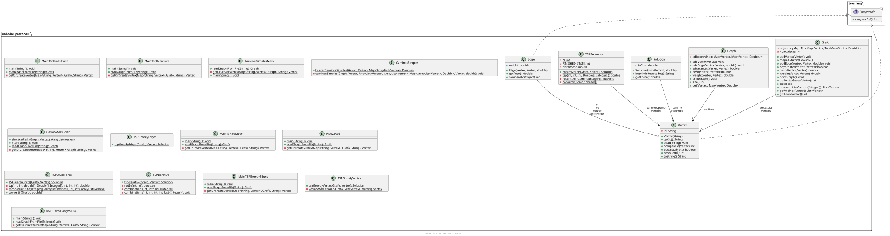

Package ual.eda2.practica03
package ual.eda2.practica03

-
ClassesClassDescriptionLa clase CaminoMasCorto proporciona métodos para encontrar el camino más corto (en términos de peso total) en un grafo.Clase que proporciona métodos para buscar caminos simples (Hamiltonianos) en un grafo, es decir, caminos que visitan cada vértice al menos una vez y regresan al vértice de origen.Clase que implementa el algoritmo TSP mediante fuerza bruta usando programación dinámica.Clase que implementa el algoritmo del TSP (Viajante de Comercio) utilizando programación dinámica y memoización de forma recursiva.Represents a vertex in a graph.